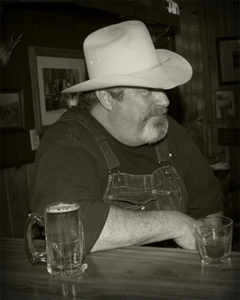
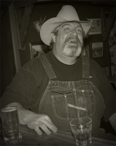
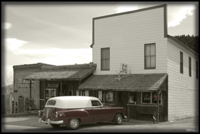

The Pony Bar
Southwest Montana's Real Western Bar
BOZEMAN DAILY CHRONICLE ARTICLE
Sunday, September 19, 2004
Pony Bar is the beating heart of a ghost town
By ERIN NICHOLES Chronicle Staff Writer
PONY ~ Michelle Smith rolled into town in the dead of winter, driving a Jeep with no windows. She
scanned the empty, red brick buildings for life signs among the ghostly remnants of a once-booming
mining camp. At the west end of Main Street, she found a beating heart: The Pony Bar.
Bar owner Scott Lambert won't forget the sight of Smith that day, standing in the old saloon's
doorway wearing a stocking cap. "I felt sorry for her," Lambert said. "He took me in,"
said Smith, 26.
Lambert immediately hired Smith, originally from New York state, as a bartender. A year-and-a-half
later, she's still in tiny Pony, six miles west of Harrison off of Highway 287. "I like it
here," she said. "The people around here are kind of like family. We fight like family and
we love each other."
If Pony's 100 residents are one big family, the Pony Bar is their living room. It's where ranchers
gather after branding. It's where football fans watch Monday night games. It's where veterans'
groups meet and hunting buddies tell stories. And the bar has a reputation for welcoming outsiders
from all walks of life.
On Saturday nights, pickup trucks line an otherwise empty Main Street. Inside the 130-year-old
building, people from three counties crowd the bar, their laughter and music breathing life into an
otherwise dead town.
"It's a real Montana bar," said Lambert, hooking the heels of his dirty cowboy boots on
the rung of a bar stool. "That's what the draw is."
The last best bar
The Pony Bar is all that is left of once-thriving local commerce. "Its the only business that
survived; it was always kind of a miners' bar," said bartender Bruce Flesch, who is a living
portrait of an Old-West barkeep in his black vest over a white shirt, finished with an arm garter
and bolo tie.
Pony was born in 1875 as a gold miners' camp. Thousands of people lived here and there were schools,
banks, Chinese laundries and saloons, according to visitmt.com.
The Pony Bar originally was McKittrick Hall, built in 1877 as a town meeting hall and boarding
house, and later, was a house of ill repute, Flesch said. After Pony went belly-up in the early
1900s, a salty woman named Bert Welch bought the hall and opened Bert's Pony Bar. She had a
reputation for opening promptly at 8 a.m., and closed promptly 10 hours later. "She didn't care
if the bar was packed full, she closed at 6 p.m.," said Dave Halvorson, a longtime resident and
bar regular.
After Welch died, the bar changed hands a few times until Lambert took over two years ago, when he
was living in Harrison and spending spare time at the saloon.
"The guy who owned it asked me to buy it a few years ago," said Lambert, 47. "I said
'no.' Then I thought, you only live once, so what the hell." He, his girlfriend and his twin
teenage boys now live in part of the building formerly used as a boarding house. "My bed's
about 10 yards from the bar," he said.
Rough and ready
The Pony Bar serves as the town hall, veterans' lodge, restaurant, senior center and leading
employer. "This is the gathering place," Halvorson said, as he drained a Rainier with his
wife after work one recent afternoon. "If you want to see somebody, you come to the Pony Bar."
Miners, loggers, ranchers and bikers are the most regular customers here. "I cater to them,"
Lambert said.
He sells cheap drinks and opens tabs because he knows many customers only get paid once a month. He
serves free food on Monday nights and stays open 365 days a year so lonely people always have a
place to spend holidays.
And the decor reflects Pony's tough-going mining and ranching roots.
Antique taxidermy, old mining-claim signs, black-and-white photographs, saddles and horse tack line
the brick walls. A painting of scantily clad prostitutes posing in front of a horse-draw wagon
always seems to have at least one onlooker. A collection of raw-humored bumper stickers sits above
the bar, including one that says, "My Montana has an East infection."
Halvorson has been coming here for years to drink beer and tell stories about things that happen,
"only in Pony."
He recalled a cold day one hunting season when a herd of cow elk trotted down the street past the
bar, which sits just a few miles from access to the Tobacco Root Mountains. "Everybody sitting
here said, 'Anybody got a cow elk tag?'," Halvorson said. "But everybody who did was up on
top of the mountain and the elk just walked right through town."
Open hearts
The Pony Bar, with its creaky hardwood floors and musky beer scent, is unique because although it
caters to people like Halvorson, it welcomes everyone. "We don't judge people," Lambert
said. "You can't judge people by how they look, but we'll sit around a while and see how they
act."
On Saturday nights, people from Pony, Harrison, Whitehall, Cardwell, Three Forks and even Bozeman
fill the bar to dance, to eat burgers and ribs, laugh over drinks and listen to live music, should
someone happen to show up to play.
"Locals will pick up their guitars and start playing," Smith said. "Everybody's open
to everyone. The strangest people come in and people end up talking to them."
Last year, a man known only as "Hillbilly Evan" hitchhiked here from Arkansas with a
guitar, thick glasses and long, curly hair. Lambert let Hillbilly sleep in the beer room and
designated him the night watchman. A few months later, the community embraced him.
"Around Christmas time, everybody pitched in and bought him a guitar," Smith said.
Hillbilly now rents a cabin and works odd jobs around the area. Every Saturday night, he is with his
friends at the bar. The way the community rallied for Hillbilly is typical of Pony, Halvorson said.
"If you need any help with anything you're doing, everybody in town shows up to help," he
said.
Bucking trends
Like all of Montana, Pony draws more tourists every year. Some come to the nearby Potosi Hot Springs
and others have just heard of the town and want to poke around the old buildings. Many stop in the
bar to ask about the town's history, and Flesch can deliver information.
Lambert knows he could tap the tourism industry, but he's not interested. "If something's
working, don't change it," he said, holding a cigarette between thick, meaty fingers.
Even his advertising is old-school. He regularly visits other bars in the area and buys the house a
round of drinks to spread the word about the Pony Bar. "That's how they used to do it in the
old days," he said.
The only major improvement he's making is restoring the boarding rooms to rent out in the future. He
wants the Pony Bar to continue serving locals, as it has for decades after riding out economic
turbulence and evolving society. And he wants the bar to continue serving as Pony's first embrace
for newcomers like Smith, who said she may leave here someday, but she's content for now. "Time
will tell," Smith said.
Scott Lambert Proprietor 406-685-3386
Contact Scott
Paula Wilson Manager

|
|||||||||||||||||||||||
Annual Events
Live Music Sunday Nites
March 17th St Paddy's Day ~ Corned Beef & Cabbage Feed
The Duck Races ~ This was the last. A very heart felt reminder to drink responsibly. Thanks anyway.
August Rockin' the Rivers
We cater the bars, say hey to our bartenders!
February 18, 2017 ~ Pink in Pony -
2011 Benefit for Penny Shorten King
2012 Benefit for Laura Lee Sheehan
2013 Breast & Cervical Cancer Treatment Fund, Butte
2014 Stockton Ervin, 12yr old 7th grader from Three Forks, diagnosed with Orbital Rhabdomyosarcoma. Parents: Sara & Brian Harris, Russell Ervin
Thanks for your contributions
Halloween Costume Party October
Costume judging 9:00
Night before Thanksgiving Dinner November 26, 2014
Smoked turkey with all the fixin's
December 31st ~ New Years Eve Party
Cook Shack Menu |
Featuring Ground Sirloin Burgers |
Butch Burger |
Grilled onions & cheese |
Pony Burger |
Ham & grilled onions |
Spicy Jalapeno Burger |
Jalapenos, grilled onions & cheese |
Mushroom Swiss Burger |
Mushrooms, grilled onions & cheese |
Bacon & Cheese Burger |
Bacon, grilled onions & cheese |
Homecut French Fries |
Cook Shack Hours |
Other Specialties |
Friday- Sunday |
Grilled Chicken Sandwich |
starting at 5:00 |
Chicken Enchiladas |
Bar Hours

1:00 til closing Mon - Fri
Noon til closing on weekends
Live Music most Sunday Evenings
Free Wi-Fi!
Cash gladly accepted
ATM available
Bài viết mới nhất
- Tổng hợp 16 quán nhậu tại Phường 4 Quận 10
- Tổng hợp 11 quán trà sữa tại Phường 4 Quận 10
- Top 17 quán cafe tại Phường 15 Quận 4
- Top 11 quán nhậu tại Phường 8 Quận 11
- Danh sách 10 quán ăn sáng tại Phường 5 Quận 6
- Danh sách 13 quán nhậu tại Phường 5 Quận 6
- Danh sách 14 quán nhậu tại Phường 6 Quận 6
- Top 15 quán cafe tại Phường 5 Quận 6